8. Introduction au framework Web NestJS
8.1. Sources
Ce cours prend appui sur les sources suivantes :
- le site officiel de NestJS : https://nestjs.com et sa documentation https://docs.nestjs.com ;
- le dépôt GitHub du framework : https://github.com/nestjs/nest ;
8.2. Les outils utilisés
- Node.js, en version LTS (18 ou supérieure), et son gestionnaire de paquets npm ;
- le CLI de NestJS (@nestjs/cli), un outil en ligne de commande qui crée la structure d'un nouveau projet, génère des fichiers (contrôleurs, services, modules...) sur un modèle tout prêt, et lance le serveur de développement ;
- un éditeur de code : Visual Studio Code, avec l'extension TypeScript ;
- un client HTTP pour tester les URL exposées : Postman, ou plus simplement la commande curl ;
- un serveur de bases de données MySQL.
8.3. La place de NestJS dans une application Web
NestJS est un framework Node.js écrit en TypeScript, destiné à construire le côté serveur d'une application Web — le plus souvent une API REST (jSON), parfois GraphQL ou une application temps réel (WebSockets). Il ne réinvente pas la gestion du protocole HTTP lui-même : par défaut, il s'appuie sur Express, un framework Node.js plus rudimentaire, chargé de recevoir les requêtes HTTP brutes et d'y répondre (Fastify est une alternative possible à Express). NestJS vient se poser par-dessus, en apportant une organisation du code que ni Node.js ni Express n'imposent par eux-mêmes : découpage en modules, contrôleurs et services, injection de dépendances, décorateurs...
Son architecture est fortement inspirée d'Angular (décorateurs, modules, injection de dépendances). L'idée générale est celle d'un point d'entrée unique qui reçoit toutes les requêtes HTTP de l'application, puis les distribue vers le bon contrôleur selon l'URL demandée ; chaque contrôleur s'appuie à son tour sur des services qui portent la logique métier et l'accès aux données, plutôt que d'écrire ce code directement dans le contrôleur.
NestJS est d'abord pensé pour produire des réponses jSON : par défaut, ce qu'une méthode de contrôleur retourne est automatiquement converti en jSON et envoyé au client, sans configuration particulière — nous le vérifierons dès la première action du mini-projet ci-dessous. Le rendu de vues HTML côté serveur (avec Handlebars, EJS ou Pug) reste possible — nous l'utiliserons d'ailleurs un peu plus looin — mais c'est une option, pas le mode de fonctionnement par défaut.
8.4. Le modèle de développement MVC de NestJS
Trois notions structurent une application NestJS :
- les modules (décorateur @Module) : un module regroupe un ensemble de fonctionnalités liées entre elles — il déclare quels contrôleurs et quels services lui appartiennent, de quels autres modules il a besoin, et ce qu'il met à disposition des autres. Une application NestJS démarre toujours à partir d'un module racine, AppModule, qui assemble tous les autres modules du projet ;
- les contrôleurs (décorateur @Controller) : un contrôleur est la porte d'entrée de l'application — une classe dont chaque méthode reçoit les requêtes HTTP correspondant à une URL précise, et renvoie une réponse au client ;
- les providers (décorateur @Injectable) : un provider est une classe ordinaire, généralement chargée de la logique métier ou de l'accès aux données, que NestJS sait créer et fournir automatiquement (l'« injecter ») à tout contrôleur ou service qui en a besoin.
Concrètement, une classe qui a besoin d'un provider le déclare simplement comme paramètre de son constructeur — NestJS crée l'instance nécessaire et la transmet automatiquement, sans qu'on ait jamais à écrire new soi-même : c'est ce qu'on appelle l'injection de dépendances par constructeur, la pratique quasi systématique en NestJS. Nous en verrons un exemple concret dès la ligne ci-dessous.
8.4.1. Un premier projet NestJS
8.4.1.1. Le projet de démonstration
Un tout petit projet, avec une seule action [/bonjour], pour découvrir l'outillage.

8.4.1.2. Configuration du projet
Ce projet est déjà fourni, prêt à l'emploi, dans l'arborescence des scripts que vous avez téléchargée — c'est le dossier nestjs-cours/hello-nest/ visible dans la copie d'écran ci-dessus (repère [3]), avec déjà tous ses fichiers. Vous n'avez donc rien à créer : ouvrez directement ce dossier existant dans VSCode (npm install si ce n'est déjà fait — voir l'introduction de ce document) et passez directement à la section suivante.
Pour information, si vous vouliez recréer ce projet vous-même à partir de rien (dans un dossier vide, en dehors de l'arborescence du cours), voici comment il a été généré :
Cette commande génère un projet dont voici les fichiers essentiels :
8.4.1.3. L'architecture d'une application NestJS
Ces quatre fichiers illustrent, à eux seuls, l'architecture MVC de NestJS : un point d'entrée (main.ts), un module racine (app.module.ts), un contrôleur (app.controller.ts) et un service (app.service.ts).
8.4.1.4. Le contrôleur C
src/app.service.ts
Commentons ce code :
- ligne 1 : [// src/app.service.ts] — un simple commentaire rappelant le fichier concerné, sans effet sur l'exécution — utile pour se repérer quand plusieurs fichiers sont montrés à la suite.
- ligne 2 : [import { Injectable } from '@nestjs/common';] — comme en TypeScript classique, on importe explicitement chaque élément utilisé, ici depuis @nestjs/common, le module qui rassemble la plupart des décorateurs et classes utilitaires de NestJS.
- ligne 4 : [@Injectable()] — un décorateur est une annotation placée juste au-dessus d'une classe, d'une méthode ou d'un paramètre TypeScript (précédée du symbole @), qui modifie ou enrichit son comportement sans toucher à son code — le mécanisme sur lequel repose la quasi-totalité du vocabulaire NestJS. @Injectable() marque cette classe comme un provider : NestJS saura la créer lui-même et la fournir automatiquement à toute autre classe qui la demande dans son constructeur, sans qu'on écrive jamais new AppService().
- ligne 5 : [export class AppService {] — une classe TypeScript ordinaire, exportée pour être importable ailleurs (ici par le contrôleur) — rien de spécifique à NestJS à ce stade, hormis le décorateur qui la précède.
- ligne 6 : [ getBonjour(): string {] — une méthode ordinaire ; : string déclare le type de la valeur renvoyée — une particularité de TypeScript, absente en JavaScript.
- ligne 7 : [ return 'Bonjour, tout le monde !';] — le contenu réellement renvoyé — pour l'instant une simple chaîne fixe.
src/app.controller.ts
Commentons ce code :
- ligne 1 : [// src/app.controller.ts] — même remarque que plus haut : un commentaire, sans effet sur l'exécution.
- ligne 2 : [import { Controller, Get } from '@nestjs/common';] — importe les deux décorateurs utilisés plus bas : @Controller (pour la classe) et @Get (pour une méthode).
- ligne 3 : [import { AppService } from './app.service';] — importe le service écrit juste avant, pour pouvoir l'injecter dans le constructeur ci-dessous.
- ligne 5 : [@Controller()] — @Controller() décore la classe qui suit pour en faire un contrôleur : NestJS lui enverra les requêtes HTTP correspondant à ses routes. L'argument entre parenthèses est un préfixe optionnel, ajouté devant toutes les routes de la classe — avec @Controller('api'), une méthode décorée @Get('x') répondrait à /api/x. Ici le préfixe est vide : la route bonjour, définie plus bas, répond donc directement à /bonjour.
- ligne 6 : [export class AppController {] — la classe du contrôleur, nommée par convention <Nom>Controller.
- ligne 7 : [ constructor(private readonly appService: AppService) {}] — le constructeur déclare un paramètre appService de type AppService, précédé du modificateur TypeScript private readonly qui, en une seule ligne, le déclare ET l'enregistre comme propriété de l'instance (this.appService). NestJS constate que le contrôleur a besoin d'un AppService, en crée une instance (une seule, partagée par toute l'application) et la fournit automatiquement ici : c'est l'injection de dépendances par constructeur annoncée plus haut — on n'écrit jamais new AppService().
- ligne 9 : [ @Get('bonjour')] — @Get('bonjour') associe la méthode qui suit à la route HTTP GET /bonjour : c'est ce décorateur qui rend l'action accessible à l'adresse testable http://localhost:3000/bonjour une fois le serveur démarré. D'autres décorateurs jouent le même rôle pour les autres verbes HTTP — @Post(), @Put(), @Delete(), @Patch() — que nous détaillerons au chapitre suivant.
- ligne 10 : [ bonjour(): string {] — le nom de la méthode, bonjour, n'a par lui-même aucun rapport avec la route : NestJS l'appelle uniquement parce qu'elle est décorée par @Get juste au-dessus. Lui donner un nom qui rappelle l'action est une simple convention de lisibilité.
- ligne 11 : [ return this.appService.getBonjour();] — le contrôleur délègue le travail au service injecté plutôt que de coder la réponse lui-même : il reste une simple couche de routage, la logique métier vit dans le service.
src/app.module.ts
Commentons ce code :
- ligne 1 : [// src/app.module.ts] — toujours le même genre de commentaire de repérage, sans effet sur l'exécution.
- ligne 2 : [import { Module } from '@nestjs/common';] — importe le décorateur @Module, utilisé ligne 6.
- ligne 6 : [@Module({] — @Module({...}) décore la classe qui suit pour en faire un module : il regroupe une partie cohérente de l'application et déclare, dans l'objet passé en argument, ce qui la compose. Quatre propriétés sont possibles (nous n'en utilisons ici que deux) : controllers (les contrôleurs que ce module expose), providers (les services que ce module fournit, disponibles pour l'injection à l'intérieur du module), imports (les autres modules dont celui-ci dépend) et exports (les providers que ce module rend disponibles aux modules qui l'importent).
- ligne 7 : [ controllers: [AppController],] — déclare que AppController, écrit plus haut, appartient à ce module — sans cette déclaration, NestJS ignorerait ce contrôleur et ses routes ne répondraient à aucune requête.
- ligne 8 : [ providers: [AppService],] — de même, déclare que AppService appartient à ce module, ce qui le rend disponible pour l'injection de dépendances — c'est ce tableau qui permet au contrôleur de le recevoir dans son constructeur.
- ligne 10 : [export class AppModule {}] — le module racine de l'application, par convention nommé AppModule : c'est lui que main.ts utilise pour démarrer le serveur.
8.4.1.5. Exécution
En ouvrant http://localhost:3000/bonjour dans un navigateur, on obtient la réponse Bonjour, tout le monde !. Le décorateur @Get('bonjour') associe la méthode bonjour() à l'URL /bonjour en GET ; NestJS envoie telle quelle la chaîne retournée. Par défaut, npm run start:dev démarre le serveur sur le port 3000 — c'est ce port que nous retrouverons dans tous les exemples des chapitres suivants.
8.4.1.6. Conclusion
Le trio contrôleur / service / module que nous venons d'écrire est le squelette de toute application NestJS ; c'est celui que nous retrouverons, à plus grande échelle, dans les chapitres suivants et dans l'étude de cas du chapitre 6.
8.4.2. L'architecture MVC de NestJS
8.4.2.1. Les modules
Le décorateur @Module accepte quatre propriétés principales : imports (les autres modules dont celui-ci a besoin), controllers (les contrôleurs qu'il expose), providers (les services qu'il fournit, à lui-même et aux modules qui l'importent), et exports (les providers qu'il rend disponibles aux autres modules). Une application NestJS est un arbre de modules, avec un module racine — AppModule — qui les assemble tous au démarrage, un peu comme un sommaire général du projet (les lecteurs venant de Spring y reconnaîtront le rôle d'un fichier de configuration central).
8.4.2.2. Les contrôleurs
Un contrôleur est une classe annotée @Controller(prefixe) : c'est elle qui reçoit les requêtes HTTP et renvoie une réponse au client. Le prefixe, optionnel, s'ajoute devant toutes les routes de la classe — avec @Controller('utilisateurs'), une méthode décorée @Get(':id') répondrait à /utilisateurs/:id, pas à /:id. Chacune des méthodes du contrôleur est associée à une route par un décorateur correspondant au verbe HTTP voulu : @Get pour lire, @Post pour créer, @Put pour remplacer, @Patch pour modifier partiellement, @Delete pour supprimer. Le chemin d'une route peut contenir des segments variables, introduits par :, comme dans @Get('utilisateurs/:id') (:id capture alors la valeur présente à cet endroit de l'URL demandée). Nous détaillerons au chapitre suivant les décorateurs qui permettent de récupérer les informations apportées par la requête (@Query, @Param, @Body...).
8.4.2.3. Les providers et l'injection de dépendances
Une classe annotée @Injectable() est un provider : NestJS sait l'instancier et l'injecter automatiquement partout où elle est demandée dans un constructeur, à condition qu'elle figure dans le tableau providers d'un module (le sien, ou un module qui l'exporte). Par défaut, un provider NestJS est un singleton : une seule instance en est créée au démarrage de l'application, et cette même instance est partagée par tous les composants qui en ont besoin — plutôt qu'une nouvelle instance recréée à chaque requête (les lecteurs venant de Spring y reconnaîtront le comportement par défaut d'un bean).
8.4.2.4. Comparaison synthétique avec Spring MVC
Le tableau suivant est purement informatif : il s'adresse aux lecteurs qui connaissent déjà Spring MVC et souhaitent transposer ce qu'ils savent. Il n'est pas nécessaire de le comprendre pour suivre la suite de ce cours — tous les termes NestJS qui y figurent sont expliqués, indépendamment de Spring, dans ce chapitre et les suivants.
- @Controller (Spring) ↔ @Controller (NestJS)
- @GetMapping / @RequestMapping (Spring) ↔ @Get(), @Post()... (NestJS)
- @RequestParam (Spring) ↔ @Query() (NestJS)
- @PathVariable (Spring) ↔ @Param() (NestJS)
- @RequestBody (Spring) ↔ @Body() (NestJS)
- @Service / @Repository + @Autowired (Spring) ↔ @Injectable() + injection par constructeur (NestJS)
- fichier de configuration / scan de composants (Spring) ↔ @Module (NestJS)
- ResponseEntity<T> (Spring) ↔ objet retourné directement, ou @Res() pour un contrôle total (NestJS)
8.5. Les actions : la réponse
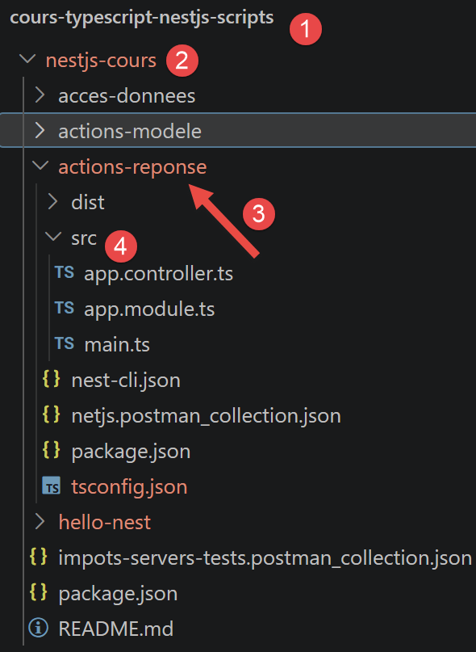
Ce chapitre explore, action par action, les différentes façons dont un contrôleur NestJS peut construire la réponse envoyée au client. Chaque action est testable avec curl ou Postman, dans un nouveau projet nest new actions-reponse ; comme au chapitre précédent, npm run start:dev démarre le serveur sur le port 3000, toutes les URL ci-dessous sont donc de la forme http://localhost:3000/.... Toutes les actions de ce chapitre sont des méthodes d'un seul et même contrôleur, AppController, décoré @Controller() sans préfixe — comme au chapitre précédent, l'argument entre parenthèses du @Get(...) de chaque action donne donc directement son URL.
8.5.1. Les éléments de l’application NestJS
L’application est ici composée de trois fichiers (cf. 4 ci-dessus)
8.5.1.1. src/app.controller.ts
// src/app.controller.ts
import { Controller, Get, Header, HttpCode, Redirect, Res } from '@nestjs/common';
import { Response } from 'express';
@Controller()
export class AppController {
// [/a01]
@Get('a01')
a01(): string {
return "Bonjour depuis l'action [/a01]";
}
// [/a02]
@Get('a02')
a02(): object {
return { message: 'Bonjour', valeur: 42 };
}
// [/a03]
@Get('a03')
@HttpCode(201)
a03(): object {
return { réponse: 'créé' };
}
// [/a04]
@Get('a04')
@Header('X-Mon-Entete', 'une-valeur')
a04(): string {
return 'réponse avec un entête personnalisé';
}
// [/a05]
@Get('a05')
@Redirect('https://nestjs.com', 302)
a05() {}
// [/a06]
@Get('a06')
a06(@Res() res: Response): void {
res.status(200).json({ réponse: 'construite à la main' });
}
}
Ce fichier assemble dans une seule classe AppController, six méthodes avec, regroupés en tête de fichier, les décorateurs (Header, HttpCode, Redirect, Res) utilisés par l’une ou l’autre d’entre elles.
Nous allons revenir sur ces 6 méthodes un peu plus loin.
8.5.1.2. src/app.module.ts
Commentons ce code :
- ligne 5 : @Module({ — à la différence du module racine du projet hello-nest vu au chapitre précédent, aucune propriété providers n’apparaît ici : ce projet ne définit aucun service, toute la logique tient dans les méthodes du contrôleur lui-même.
- ligne 6 : controllers: [AppController], — seule déclaration nécessaire : elle rattache AppController, et donc ses six routes, à ce module.
8.5.1.3. src/main.ts
Le point d’entrée ne change pas d’un projet à l’autre : on retrouve exactement le même squelette bootstrap() que dans le projet hello-nest du chapitre précédent, qui crée l’application à partir du module racine puis écoute sur le port 3000.
8.5.1.4. [/a01] : renvoyer du texte
Commentons ce code :
- ligne 1 : [@Get('a01')] — @Get('a01') associe cette méthode à la route GET /a01 — comme au chapitre précédent, c'est ce décorateur qui relie une URL à une méthode. Cette action est donc accessible à l'adresse http://localhost:3000/a01 une fois le serveur démarré (npm run start:dev).
- ligne 2 : [a01(): string {] — le nom de la méthode, a01, n'a par lui-même aucun rapport avec la route : NestJS l'appelle uniquement parce qu'elle est décorée par @Get juste au-dessus. Lui donner le même nom que l'action, comme dans tout ce chapitre, est une simple convention de lisibilité, adoptée pour retrouver facilement l'action correspondant à une URL.
- ligne 3 : [ return "Bonjour depuis l'action [/a01]";] — la méthode renvoie simplement une chaîne de caractères.
NestJS envoie la chaîne renvoyée telle quelle au client, avec un en-tête Content-Type: text/html.
8.5.1.5. [/a02] : rendre un objet, sérialisé automatiquement en jSON
Commentons ce code :
- ligne 1 : [@Get('a02')] — accessible à l'adresse http://localhost:3000/a02.
- ligne 2 : [a02(): object {] — cette fois la méthode déclare renvoyer un object plutôt qu'une string — c'est ce type de retour qui va changer le comportement de NestJS, voir ci-dessous.
- ligne 3 : [ return { message: 'Bonjour', valeur: 42 };] — un objet littéral JavaScript/TypeScript, avec deux propriétés.
Dès qu'une méthode retourne un objet (ou un tableau), NestJS le sérialise automatiquement en jSON et positionne l'en-tête Content-Type: application/json — on n'a rien de particulier à faire pour obtenir une réponse jSON, contrairement à la chaîne de caractères de [/a01], qui produit du texte brut.
8.5.1.6. [/a03] : changer le code de statut HTTP
Commentons ce code :
- ligne 1 : [import { Get, HttpCode } from '@nestjs/common';] — importe les deux décorateurs utilisés ci-dessous.
- ligne 3 : [@Get('a03')] — accessible à l'adresse http://localhost:3000/a03. Par défaut, une action @Get répond avec le code de statut HTTP 200 (le nombre à trois chiffres, renvoyé avec toute réponse HTTP, qui indique au client si la requête a réussi — 200 : succès, 404 : ressource introuvable, 500 : erreur serveur, etc.).
- ligne 4 : [@HttpCode(201)] — @HttpCode(201) force explicitement le code de statut renvoyé par cette action, ici 201 (Created), à la place du 200 par défaut — un choix purement pédagogique ici pour illustrer le décorateur, qu'on réserverait normalement à une action qui crée réellement une ressource (typiquement un @Post plutôt qu'un @Get). Un navigateur classique n'affiche pas le code de statut reçu ; pour le vérifier, utilisez Postman ou l'onglet réseau des outils de développement.
8.5.1.7. [/a04] : ajouter un entête HTTP
Commentons ce code :
- ligne 1 : [import { Get, Header } from '@nestjs/common';] — importe les deux décorateurs utilisés ci-dessous.
- ligne 3 : [@Get('a04')] — accessible à l'adresse http://localhost:3000/a04.
- ligne 4 : [@Header('X-Mon-Entete', 'une-valeur')] — un en-tête HTTP (header) est une information complémentaire envoyée avec la réponse, en dehors du corps du message — le Content-Type vu plus haut en est un exemple standard. @Header(nom, valeur) ajoute ici un en-tête personnalisé, X-Mon-Entete, avec la valeur une-valeur. Comme pour le code de statut, un navigateur classique ne montre pas les en-têtes reçus par défaut : il faut Postman ou les outils de développement pour les observer.
8.5.1.8. [/a05] : rediriger le client
Commentons ce code :
- ligne 1 : [import { Get, Redirect } from '@nestjs/common';] — importe les deux décorateurs utilisés ci-dessous.
- ligne 3 : [@Get('a05')] — accessible à l'adresse http://localhost:3000/a05 — ouverte dans un navigateur, cette URL redirige immédiatement vers https://nestjs.com.
- ligne 4 : [@Redirect('https://nestjs.com', 302)] — @Redirect(url, code) fait répondre l'action par une redirection HTTP vers url, avec le code de statut code (302, Found, est la valeur par défaut si on omet ce second argument) — le navigateur suit automatiquement cette redirection sans intervention de l'utilisateur.
- ligne 5 : [a05() {}] — le corps de la méthode est vide : tout le travail est fait par le décorateur @Redirect juste au-dessus, la méthode elle-même n'a rien à renvoyer.
8.5.1.9. [/a06] : accès direct à l'objet réponse d'Express
Commentons ce code :
- ligne 1 : [import { Get, Res } from '@nestjs/common';] — importe le décorateur @Res, utilisé ligne 5, en plus de @Get déjà connu.
- ligne 2 : [import { Response } from 'express';] — importe le type TypeScript Response fourni par Express (le serveur HTTP sur lequel NestJS s'appuie par défaut, voir le chapitre « Introduction »), utilisé pour typer le paramètre ci-dessous.
- ligne 4 : [@Get('a06')] — accessible à l'adresse http://localhost:3000/a06.
- ligne 5 : [a06(@Res() res: Response): void {] — @Res() injecte directement l'objet réponse brut d'Express comme argument de la méthode, ici nommé res. C'est l'opposé de [/a01]/[/a02] : au lieu de laisser NestJS construire la réponse à partir de la valeur retournée, le code reprend ici la main sur la totalité de la réponse HTTP.
- ligne 6 : [ res.status(200).json({ réponse: 'construite à la main' });] — appelle directement les méthodes de l'API Express — status(200) fixe le code de statut, json({...}) sérialise l'objet en jSON et envoie effectivement la réponse (ces deux étapes sont normalement automatiques, comme au [/a02]).
Exécution de l’application NestJS
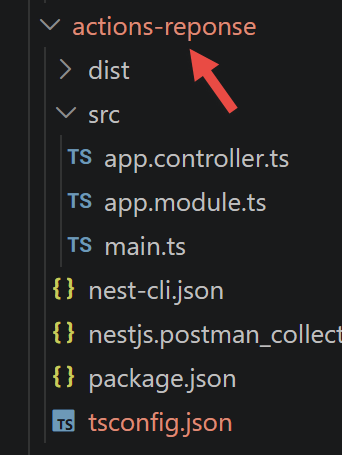
Dans un terminal à la racine du projet, tapez la commande :
Vous obtenez la réponse suivante :
8.5.2. Tests Postman
Pour les tests Postman vous pouvez utiliser la collection de requêtes suivante :
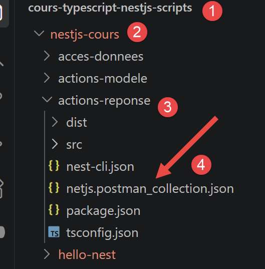
Voici les tests Postman des six actions :
8.5.2.1. Action a01
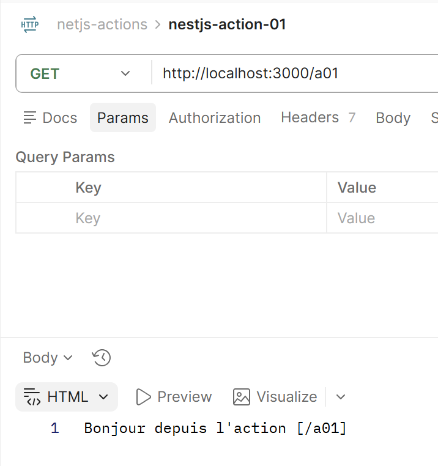
8.5.2.2. Action a02

8.5.2.3. Action a04
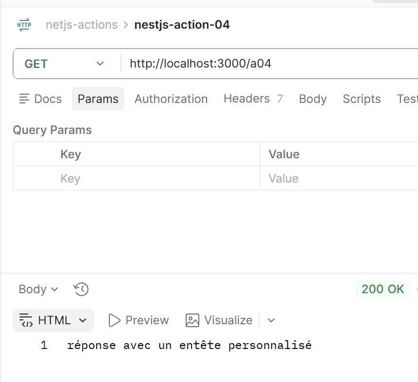
Pour voir l’entête envoyé par le serveur :

8.5.2.4. Action a05
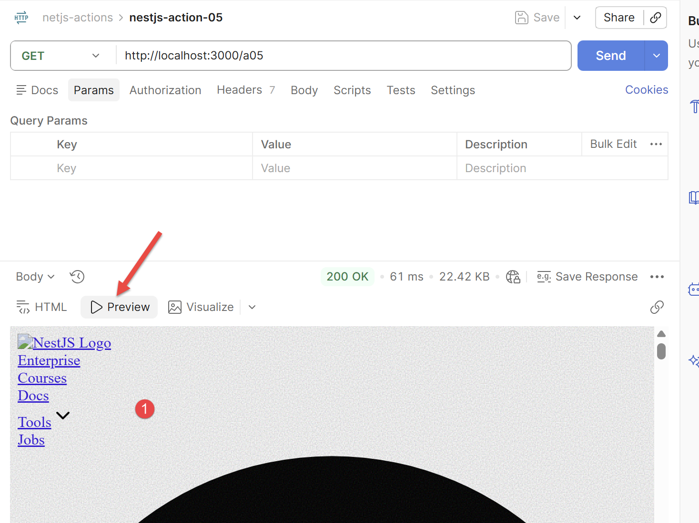
En [1], le site vers lequel a été redirigé le client Postman.
8.5.2.5. Action a06

8.5.3. Conclusion
NestJS offre donc deux approches pour construire une réponse : soit on laisse le framework la construire automatiquement à partir de la valeur retournée par la méthode — le cas le plus courant, illustré par [/a01] à [/a05] — soit on prend, avec @Res(), un contrôle total et manuel sur la réponse HTTP, au prix de devoir alors tout gérer soi-même ([/a06]).
8.6. Les actions : le modèle

Ce chapitre est le pendant du précédent : il ne s'agit plus de construire la réponse, mais de récupérer les informations apportées par la requête du client (paramètres d'URL, corps envoyé, entêtes...). Comme au chapitre précédent, toutes les actions sont des méthodes d'un même contrôleur AppController décoré @Controller() sans préfixe, et le serveur écoute par défaut sur le port 3000 — les URL ci-dessous sont donc toutes de la forme http://localhost:3000/....
8.6.1. Les éléments de l’application NestJS
Détaillons les fichiers (cf. 4 ci-dessus) qui composent le projet actions-modele.
8.6.1.1. src/app.controller.ts
// src/app.controller.ts
// Chapitre 4 du cours : les actions, le modèle — [/m01] à [/m08]
import {
Body,
Controller,
Get,
Headers,
Param,
Post,
Query,
Req,
Session,
UsePipes,
ValidationPipe,
} from '@nestjs/common';
import { Request } from 'express';
import { CalculDto } from './dto/calcul.dto';
@Controller()
export class AppController {
// [/m01] : paramètres d'un GET — testée par GET /m01?nom=Serge&age=60
@Get('m01')
m01(@Query('nom') nom: string, @Query('age') age: string): object {
return { nom, age };
}
// [/m02] : éléments d'une URL
@Get('m02/:id')
m02(@Param('id') id: string): object {
return { id };
}
// [/m03] : paramètres d'un POST
@Post('m03')
m03(@Body() corps: any): object {
return corps;
}
// [/m04] : mapper les paramètres postés dans une classe
@Post('m04')
m04(@Body() données: CalculDto): CalculDto {
return données;
}
// [/m05] : validation du modèle de l'action (ValidationPipe local)
@Post('m05')
@UsePipes(
new ValidationPipe({
transform: true,
transformOptions: { enableImplicitConversion: true },
}),
)
m05(@Body() données: CalculDto): CalculDto {
return données;
}
// [/m06] : accéder à un entête HTTP
@Get('m06')
m06(@Headers('user-agent') userAgent: string): object {
return { userAgent };
}
// [/m07] : accéder à la session
@Get('m07')
m07(@Session() session: Record<string, any>): object {
session.compteur = (session.compteur ?? 0) + 1;
return { compteur: session.compteur };
}
// [/m08] : accéder à la totalité de la requête
@Get('m08')
m08(@Req() req: Request): object {
return { méthode: req.method, url: req.url };
}
}
Une seule classe AppController regroupe huit méthodes avec en tête de fichier l’ensemble des décorateurs (@Query, @Param, @Body, @Headers, @Session, @Req) et le CalculDto (cf. [/m04] et [/m05]) utilisés par l’une ou l’autre d’entre elles. Nous allons commenter ces méthodes prochainement.
8.6.1.2. src/app.module.ts
Même remarque qu’au chapitre précédent : pas de providers ici non plus, ce projet ne définissant aucun service séparé.
8.6.1.3. src/main.ts
Commentons ce code :
- ligne 9 : app.use(session({ secret: 'xxx', resave: false, saveUninitialized: false })); — installe le middleware Express express-session — c’est cette ligne, présente une seule fois ici et valable pour toute l’application, qui rend possible le compteur de session vu en [/m07]. Le secret sert à signer le cookie de session ; en production, il doit provenir d’une variable d’environnement, jamais être écrit en clair dans le code.
- lignes 10 à 15 : app.useGlobalPipes(new ValidationPipe({ ... })); — déclare globalement, pour tous les contrôleurs de l’application, le même ValidationPipe que celui appliqué localement à [/m05] avec @UsePipes. Les deux options transform: true et enableImplicitConversion: true permettent la conversion automatique des types (chaînes de l’URL vers number, notamment) avant la validation.
8.6.1.4. [/m01] : paramètres d'un GET
Commentons ce code :
- ligne 1 : [@Get('m01')] — comme au chapitre précédent, ce décorateur associe la méthode à la route GET /m01.
- ligne 2 : [m01(@Query('nom') nom: string, @Query('age') age: string): object {] — @Query(nom) est un nouveau décorateur, posé cette fois sur un paramètre de la méthode plutôt que sur la classe ou la méthode elle-même : il extrait un paramètre de la chaîne de requête (la partie de l'URL après le ?, sous la forme clé=valeur séparées par des &) et le fournit directement comme argument, déjà nommé et typé, sans qu'on ait à aller le chercher soi-même. Ici, @Query('nom') extrait le paramètre nom et l'injecte dans la variable nom, et de même pour age. Cette action est donc testable à l'adresse http://localhost:3000/m01?nom=Serge&age=60, qui donnera nom = "Serge" et age = "60" (une valeur de chaîne de requête est toujours reçue comme une chaîne de caractères, même si elle ressemble à un nombre).
- ligne 3 : [ return { nom, age };] — notation raccourcie de { nom: nom, age: age } : quand le nom de la propriété et celui de la variable sont identiques, on peut écrire seulement le nom.
8.6.1.5. [/m02] : éléments d'une URL
Commentons ce code :
- ligne 1 : [@Get('m02/:id')] — le :id dans le chemin de la route est un segment variable (un paramètre de route) : NestJS capture ce qui apparaît à cet endroit précis de l'URL demandée. Une requête vers http://localhost:3000/m02/5 capture ainsi 5, une requête vers /m02/abc capturerait abc.
- ligne 2 : [m02(@Param('id') id: string): object {] — @Param(nom) est le décorateur complémentaire de @Query vu au [/m01] : là où @Query lit la chaîne de requête (après le ?), @Param lit un segment variable du chemin lui-même (ici :id). @Param('id') injecte donc la valeur capturée dans la variable id.
- ligne 3 : [ return { id };] — renvoie simplement la valeur reçue, encapsulée dans un objet.
8.6.1.6. [/m03] : paramètres d'un POST
Commentons ce code :
- ligne 1 : [@Post('m03')] — @Post() est le décorateur équivalent à @Get() pour le verbe HTTP POST, normalement utilisé pour envoyer des données au serveur (création d'une ressource, soumission d'un formulaire...) plutôt que pour lire une simple URL. Contrairement aux actions précédentes, celle-ci n'est donc pas testable en tapant simplement l'adresse dans un navigateur (qui ne fait que des GET) : il faut un client capable d'envoyer un POST
- ligne 2 : [ m03(@Body() corps: any): object {] — @Body(), sans argument, injecte cette fois la totalité du corps de la requête (contrairement à @Query/@Param, qui lisent chacun un seul champ nommé) ; any est le type TypeScript signifiant « n'importe quel type », utilisé ici car aucune forme précise n'est encore imposée aux données reçues (voir le
[/m04]pour une version typée). - ligne 3 : [ return corps;] — renvoie tel quel le corps reçu, pour vérifier ce qui a été envoyé.
8.6.1.7. [/m04] : mapper les paramètres postés dans une classe
dto/calcul.dto.ts
Commentons ce code :
- ligne 1 : [// dto/calcul.dto.ts] — commentaire de repérage du fichier, sans effet sur l'exécution.
- ligne 2 : [export class CalculDto {] — une classe qui décrit uniquement la forme des données attendues, sans aucune méthode — on l'appelle un DTO (Data Transfer Object), une simple structure de données typée, utilisée pour faire transiter des informations d'un point à un autre du programme (ici, du client vers le contrôleur).
- ligne 3 : [ marié: string;] — une propriété typée : marié doit être une chaîne de caractères — TypeScript vérifiera ce type à la compilation.
- ligne 4 : [ enfants: number;] — enfants doit être un nombre.
- ligne 5 : [ salaire: number;] — salaire doit être un nombre.
Commentons ce code :
- ligne 1 : [@Post('m04')] — même remarque qu'au [/m03] : à tester avec Postman ou curl, pas directement dans la barre d'adresse d'un navigateur.
- ligne 2 : [m04(@Body() données: CalculDto): CalculDto {] — toujours @Body(), comme au [/m03], mais la variable données est cette fois typée CalculDto plutôt que any : NestJS convertit automatiquement le jSON reçu en une instance de cette classe, avec ses propriétés nommées et typées (marié, enfants, salaire) plutôt qu'un objet quelconque non typé — ce qui permet la vérification par le compilateur TypeScript et l'autocomplétion dans l'éditeur. Attention : à ce stade, rien ne garantit encore que les données reçues respectent vraiment cette forme (un client pourrait envoyer n'importe quoi) — voir le
[/m05]pour la validation effective.
8.6.1.8. [/m05] : validation du modèle de l'action
On installe deux bibliothèques compagnes de NestJS pour la validation :
dto/calcul.dto.ts
Commentons ce code :
- ligne 1 : [import { IsIn, IsInt, Min } from 'class-validator';] — class-validator est une bibliothèque indépendante de NestJS (mais très largement utilisée avec lui) qui permet de décrire des règles de validation directement sur les propriétés d'une classe, à l'aide de décorateurs — comme @IsIn, @IsInt et Min importés ici.
- ligne 4 : [ @IsIn(['oui', 'non'])] — @IsIn([...]) impose que la valeur de la propriété qui suit (marié) fasse partie de la liste donnée — ici uniquement 'oui' ou 'non', toute autre valeur sera rejetée.
- ligne 7 : [ @IsInt() @Min(0)] — deux décorateurs peuvent être posés sur la même propriété, l'un à la suite de l'autre : @IsInt() impose un nombre entier, @Min(0) impose une valeur supérieure ou égale à 0 — les deux règles s'appliquent ensemble à enfants.
Commentons ce code :
- ligne 1 : [import { Body, Post, UsePipes, ValidationPipe } from '@nestjs/common';] — importe, en plus des décorateurs déjà connus, UsePipes et ValidationPipe
- ligne 3 : [@Post('m05')] — à tester avec Postman ou curl (POST), pas dans la barre d'adresse d'un navigateur.
- ligne 4 : [@UsePipes(new ValidationPipe())] — un pipe NestJS est un mécanisme qui s'intercale entre la requête reçue et le code de la méthode, pour transformer ou vérifier une donnée avant qu'elle n'atteigne le contrôleur. ValidationPipe, fourni par NestJS, est le pipe standard de validation : il relit les décorateurs class-validator posés sur le DTO (@IsIn, @IsInt, @Min...) et rejette automatiquement, avec une réponse HTTP 400 (Bad Request), toute requête dont les données ne les respectent pas — sans qu'on ait à écrire soi-même le moindre if. @UsePipes() est le décorateur qui active un pipe sur une méthode précise.
8.6.1.9. [/m06] : accéder à un entête HTTP
Commentons ce code :
- ligne 1 : [@Get('m06')] — accessible à l'adresse http://localhost:3000/m06.
- ligne 2 : [m06(@Headers('user-agent') userAgent: string): object {] — @Headers(nom) lit un entête HTTP précis de la requête entrante (par opposition à @Header(), vu au chapitre précédent, qui ajoutait un entête à la réponse sortante — même mot, sens opposé selon qu'on lit ou qu'on écrit). Ici, @Headers('user-agent') récupère l'entête User-Agent (le nom du navigateur ou de l'outil qui a émis la requête, envoyé automatiquement par tout client HTTP). Sans argument, @Headers() renverrait un objet contenant tous les entêtes de la requête.
- ligne 3 : [ return { userAgent };] — renvoie la valeur lue, encapsulée dans un objet.
8.6.1.10. [/m07] : accéder à la session
main.ts
Commentons ce code :
- ligne 2 : [app.use(session({ secret: 'xxx', resave: false, saveUninitialized: false }));] — app.use(...) enregistre un middleware Express — un traitement exécuté pour chaque requête entrante, avant qu'elle n'atteigne un contrôleur quelconque. Ici, le middleware session (fourni par la bibliothèque express-session) met en place la gestion de session pour toute l'application : secret sert à signer le cookie de session (pour empêcher qu'il soit falsifié), resave et saveUninitialized sont des options qui contrôlent quand la session est réellement enregistrée côté serveur.
Commentons ce code :
- ligne 1 : [import { Get, Session } from '@nestjs/common';] — importe le décorateur @Session
- ligne 3 : [@Get('m07')] — accessible à l'adresse http://localhost:3000/m07 — rafraîchir plusieurs fois la page fait grossir le compteur, sa valeur est conservée côté serveur entre les requêtes.
- ligne 4 : [m07(@Session() session: Record<string, any>): object {] — une session est un espace de stockage associé à un visiteur particulier, conservé côté serveur entre plusieurs requêtes successives — contrairement à une variable ordinaire, qui serait réinitialisée à chaque nouvelle requête. Le client est identifié grâce à un cookie contenant un identifiant de session, envoyé automatiquement par le navigateur à chaque requête une fois reçu. @Session() injecte directement cet espace de stockage comme argument de la méthode.
- ligne 5 : [ session.compteur = (session.compteur ?? 0) + 1;] — l'opérateur ?? (coalescence des nuls) renvoie sa partie droite seulement si la partie gauche vaut null ou undefined — ici, il initialise le compteur à 0 lors de la toute première visite, avant de lui ajouter 1 à chaque requête suivante.
- ligne 6 : [ return { compteur: session.compteur };] — renvoie la valeur actuelle du compteur, conservée dans la session.
C'est très exactement express-session que nous avons utilisé pour mémoriser, au chapitre 6, l'authentification et la liste des simulations du serveur de calcul de l'impôt.
8.6.1.11. [/m08] : accéder à la totalité de la requête
Commentons ce code :
- ligne 1 : [import { Get, Req } from '@nestjs/common';] — importe le décorateur @Req
- ligne 2 : [import { Request } from 'express';] — importe le type TypeScript Request fourni par Express, pour typer le paramètre ci-dessous.
- ligne 4 : [@Get('m08')] — accessible à l'adresse http://localhost:3000/m08.
- ligne 5 : [m08(@Req() req: Request): object {] — @Req() injecte directement l'objet requête brut d'Express, avec tout ce qu'il contient (méthode, URL, entêtes, corps, paramètres...), plutôt qu'une seule information à la fois comme le font @Query, @Param, @Body, @Headers ou @Session. C'est, côté requête, l'équivalent exact de ce qu'était @Res() côté réponse au [/a06] du chapitre précédent : moins d'automatisation apportée par NestJS, mais un accès complet et sans compromis.
- ligne 6 : [ return { méthode: req.method, url: req.url };] — lit directement deux propriétés de l'objet requête Express : method (le verbe HTTP utilisé) et url (le chemin demandé).
Exécution de l’application NestJS
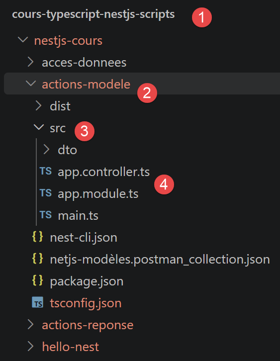
Dans un terminal à la racine du projet, tapez la commande :
Vous obtenez la réponse suivante :
8.6.2. Tests Postman
Pour les tests Postman vous pouvez utiliser la collection de requêtes suivante :

Voici les tests Postman des huit méthodes de l’application :
8.6.2.1. Action m01
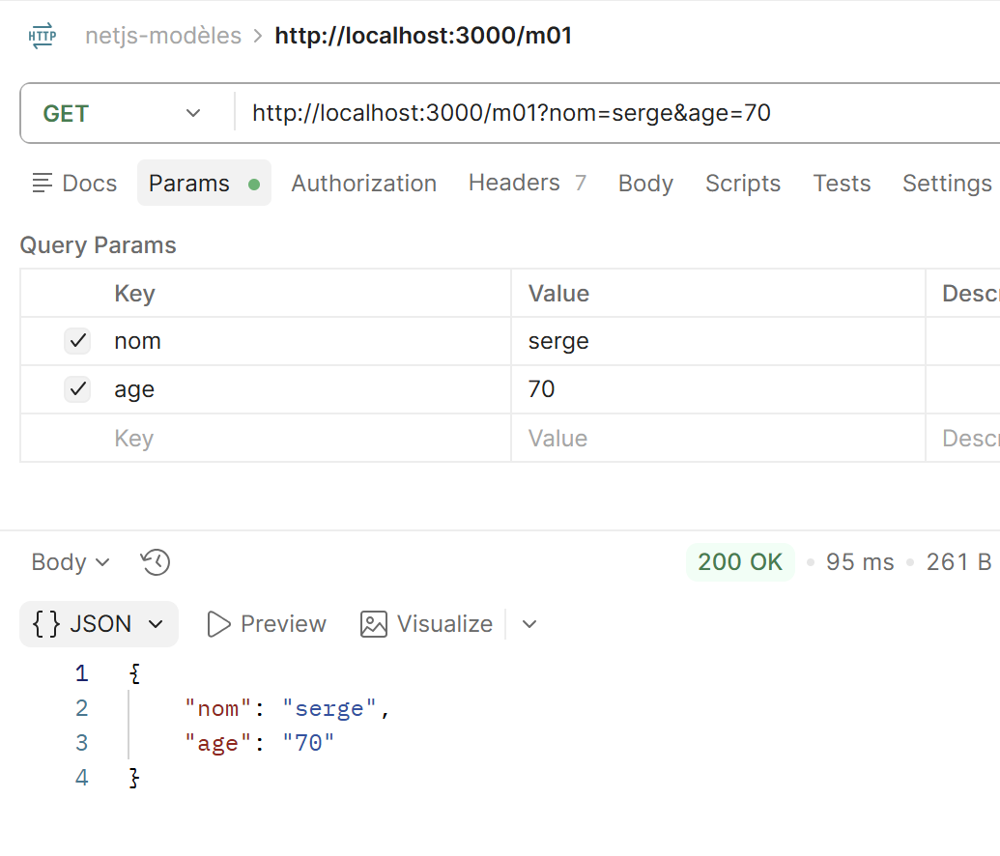
8.6.2.2. Action m02

8.6.2.3. Action m03

8.6.2.4. Action m04
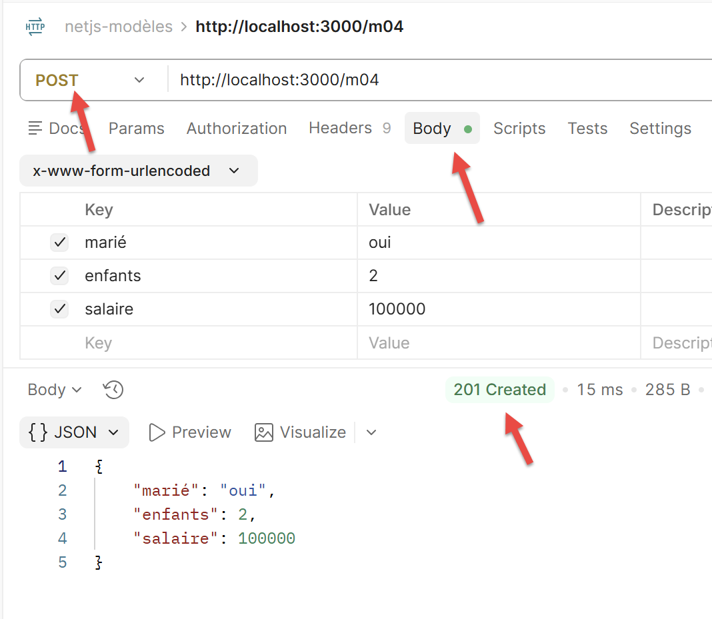
8.6.2.5. Action m05

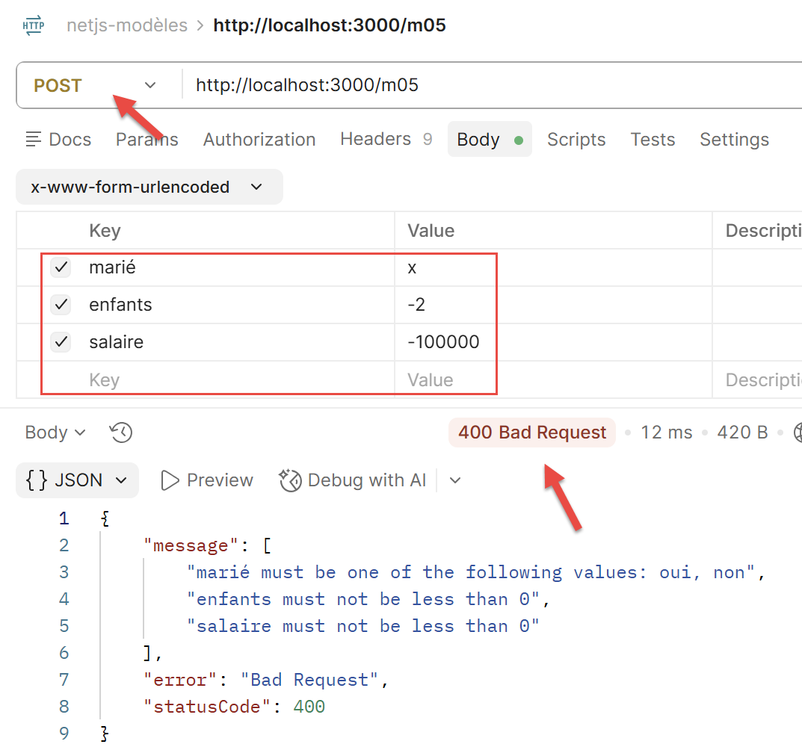
8.6.2.6. Action m06

8.6.2.7. Action m07
Après 3 requêtes :

8.6.2.8. Action m08

8.6.3. Conclusion
@Query, @Param, @Body, @Headers, @Session couvrent la grande majorité des besoins ; @Req() reste disponible pour un accès complet et sans compromis à la requête — c'est ce dernier choix qu'a fait l’action [m06] de notre étude de cas, pour les mêmes raisons que pour l’action [/a06].
8.7. L'accès aux données : NestJS et les bases de données
NestJS propose plusieurs façons d'accéder à une base de données : trois approches coexistent dans l'écosystème Node, du plus proche du SQL au plus proche d'un ORM à entités décorées -- contrairement à Spring Data, qui impose aux développeurs Java une seule façon de faire.
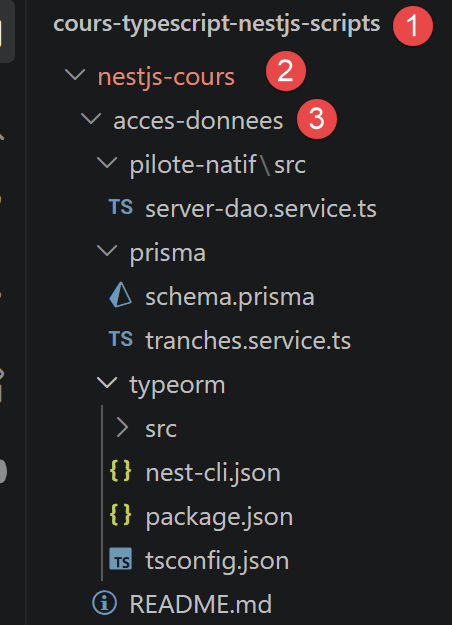
8.7.1. Le pilote natif : une couche [DAO] écrite à la main
Node dispose de pilotes légers pour chaque SGBD (mysql2 pour MySQL, pg pour PostgreSQL...) qui exposent directement le SQL : on écrit soi-même les requêtes, sans aucune couche d'abstraction entre le code et la base. C'est cette approche qu'utilise la couche [DAO] de notre étude de cas : un service @Injectable() ouvre une connexion et exécute des requêtes SQL explicites.
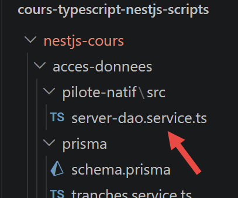
Extrait de src/model/server-dao.service.ts (chapitre [étude de cas]) :
import mysql from 'mysql2/promise';
@Injectable()
export class ServerDaoService {
private async getTaxAdminDataFromMysql(): Promise<TaxAdminData> {
const connection = await mysql.createConnection({
host: 'localhost',
database: 'dbimpots-2019',
user: 'admimpots',
password: 'mdpimpots',
});
const [tranches] = await connection.query(
'select limites, coeffR, coeffN from tbtranches order by id',
);
// ... construction de l'objet [TaxAdminData] à partir des lignes lues
await connection.end();
return taxAdminData;
}
}
Commentons ce code :
- ligne 1 : [import mysql from 'mysql2/promise';] — on importe le pilote MySQL/MariaDB pour Node.js (le paquet mysql2) ; le sous-chemin mysql2/promise en fournit la variante basée sur des Promise (donc utilisable avec await), plutôt que la variante historique à base de fonctions de rappel (callback) ;
- ligne 3 : [@Injectable()] — ce décorateur marque la classe qui suit comme un provider NestJS : une classe que NestJS sait instancier lui-même et injecter dans le constructeur d'une autre classe (ici, ServerDaoService sera injecté dans un contrôleur d'action, voir le chapitre suivant) -- sans ce décorateur, NestJS ne saurait pas la créer automatiquement ;
- ligne 6 : [const connection = await mysql.createConnection({ ... })] — mysql.createConnection(...) ouvre une nouvelle connexion réseau vers le serveur MySQL/MariaDB, avec l'hôte, la base, l'utilisateur et le mot de passe donnés directement en paramètres ; await suspend l'exécution de la fonction jusqu'à ce que la connexion soit effectivement établie ;
- ligne 12 : [const [tranches] = await connection.query('select ... order by id')] — connection.query(...) exécute la requête SQL passée en chaîne de caractères ; la méthode renvoie un tableau de deux éléments, dont le premier (récupéré ici par déstructuration, [tranches]) contient les lignes lues -- aucune génération de SQL, aucune correspondance objet-relationnel : c'est exactement le texte écrit qui part vers la base ;
- ligne 16 : [await connection.end();] — on referme explicitement la connexion une fois la lecture terminée -- avec le pilote natif, la gestion du cycle de vie de la connexion est entièrement à la charge du code, contrairement aux deux ORM présentés plus loin.
Cette approche donne un contrôle total sur le SQL exécuté, sans aucune magie ni génération automatique de requêtes : ce qu'on lit dans le code est exactement ce qui part vers MySQL (la même philosophie que JdbcTemplate en Spring MVC, ou que PDO utilisé directement en PHP, pour qui connaît l'un de ces environnements).
8.7.2. TypeORM : l'équivalent de Spring Data JPA
TypeORM est l'ORM le plus utilisé avec NestJS : on y décrit ses tables sous forme de classes TypeScript décorées (les « entités »), et on interroge la base au travers d'un Repository injecté, sans écrire de requête SQL pour les cas simples (c'est l'ORM le plus proche, dans l'esprit, de Spring Data JPA / Hibernate, pour qui connaît cet environnement).

8.7.2.1. Configuration du module
Dans le module racine de l'application (app.module.ts), on déclare la connexion à la base une seule fois, avec TypeOrmModule.forRoot(...) :
app.module.ts
Commentons ce code :
- ligne 1 : [// app.module.ts] — ce commentaire indique seulement d'où provient l'extrait : ce bloc TypeOrmModule.forRoot({...}) est un élément de la liste imports du @Module({...}) racine de l'application, pas un fichier à part entière ;
- ligne 2 : [TypeOrmModule.forRoot({ ... })] — forRoot(...) configure, une seule fois pour toute l'application, la connexion à la base de données -- l'équivalent de la DataSource déjà vue avec TypeORM hors NestJS (chapitre 2) ; chaque module qui a besoin d'une entité précise ne fera ensuite que la déclarer avec TypeOrmModule.forFeature(...), comme plus bas ;
- ligne 9 : [entities: [Tranche],] — la liste des classes-entités (ici, une seule : Tranche) que TypeORM doit connaître pour établir la correspondance entre les classes TypeScript et les tables SQL ;
- ligne 10 : [synchronize: false,] — mis à true, TypeORM modifierait automatiquement le schéma de la base pour le faire correspondre aux entités -- pratique en tout début de projet, mais dangereux dès qu'une vraie base contient des données : on le laisse à false ici, comme il est recommandé de le faire dès qu'on touche à une base existante.
8.7.2.2. Les entités
Une entité est une classe TypeScript ordinaire, à laquelle des décorateurs ajoutent les informations nécessaires pour la faire correspondre à une table SQL et à ses colonnes :
entities/tranche.entity.ts
Commentons ce code :
- ligne 1 : [import { Entity, PrimaryGeneratedColumn, Column } from 'typeorm';] — on importe, depuis le paquet typeorm, les trois décorateurs utilisés plus bas dans ce fichier ;
- ligne 3 : [@Entity('tbtranches')] — ce décorateur déclare que la classe qui suit représente une table SQL : l'argument 'tbtranches' donne le nom réel de cette table dans la base -- sans lui, TypeORM aurait déduit un nom de table à partir du nom de la classe, ce qui ne convient pas ici puisque la table existante s'appelle tbtranches et non tranche ;
- ligne 5 : [@PrimaryGeneratedColumn()] — marque la propriété suivante (id) comme la clé primaire de la table, dont la valeur est générée automatiquement par la base (auto-incrément) -- on n'a donc jamais à fournir soi-même une valeur pour id à la création ;
- ligne 8 : [@Column('decimal')] — marque la propriété suivante (limites) comme une colonne ordinaire de la table ; l'argument 'decimal' précise le type SQL de la colonne -- les deux autres colonnes (coeffR, coeffN) sont déclarées de la même façon.
@Entity, @Column, @PrimaryGeneratedColumn : le vocabulaire employé est presque littéralement celui de JPA (@Entity, @Column, @Id + @GeneratedValue) -- TypeORM a délibérément été conçu pour être familier à qui connaît Hibernate, mais rien ici ne suppose cette connaissance : ces décorateurs suffisent à eux seuls à faire correspondre la classe à la table.
8.7.2.3. Le Repository
Le Repository est l'objet qui donne accès aux lignes de la table, sans qu'on ait à écrire soi-même les requêtes SQL pour les opérations courantes :
tranches.service.ts
Commentons ce code :
- ligne 1 : [import { InjectRepository } from '@nestjs/typeorm';] — InjectRepository est le décorateur spécifique à @nestjs/typeorm qui permet de demander l'injection d'un Repository particulier (voir plus bas) ;
- ligne 4 : [@Injectable()] — comme plus haut, ce décorateur fait de TranchesService un provider que NestJS peut instancier et injecter ailleurs -- ici, dans le contrôleur ci-dessous ;
- ligne 7 : [@InjectRepository(Tranche)] — placé devant un paramètre du constructeur, ce décorateur demande à NestJS d'injecter le Repository déjà configuré pour l'entité Tranche -- celui que TypeOrmModule.forFeature([Tranche]) enregistre dans le module (voir plus bas) ; sans lui, NestJS ne saurait pas quel Repository fournir ;
- ligne 11 : [return this.tranchesRepository.find({ order: { id: 'ASC' } });] — find(...) lit toutes les lignes de la table, triées par id croissant, et renvoie une Promise d'un tableau de Tranche -- aucune requête SQL écrite à la main, contrairement à l'approche par pilote natif vue plus haut.
Repository<Tranche> est un objet fourni par TypeORM, prêt à l'emploi dès qu'on l'injecte : il fournit déjà les méthodes courantes (find, findOne, save, delete...) pour la table associée à l'entité Tranche, sans qu'on ait à les écrire soi-même (le même rôle, très exactement, que joue JpaRepository<Tranche, Integer> côté Spring Data, pour qui connaît cet environnement).
8.7.2.4. Un contrôleur utilisant le Repository
Il reste à déclarer un module qui relie l'entité, le service et le contrôleur, puis un contrôleur qui expose le service en HTTP :
tranches.module.ts
- ligne 1 : [@Module({ ... })] — ce décorateur, déjà rencontré précédemment, marque la classe comme un module NestJS : une unité qui regroupe des éléments liés entre eux (ici, tout ce qui concerne les tranches d'imposition) ;
- ligne 2 : [imports: [TypeOrmModule.forFeature([Tranche])],] — forFeature([Tranche]) enregistre, pour ce module précis, le Repository de l'entité Tranche (construit à partir de la connexion déjà ouverte par forRoot(...) dans le module racine) -- c'est ce Repository-là que @InjectRepository(Tranche) va récupérer plus haut ;
- ligne 3 : [providers: [TranchesService],] — la liste des classes @Injectable() que ce module met à disposition -- ici, le service qui utilise le Repository ;
- ligne 4 : [controllers: [TranchesController],] — la liste des contrôleurs (classes @Controller()) que ce module expose.
tranches.controller.ts
Commentons ce code :
- ligne 1 : [@Controller('tranches')] — ce décorateur marque la classe comme un contrôleur, et fixe le préfixe d'URL commun à toutes ses routes : 'tranches', donc /tranches -- chaque méthode annotée à l'intérieur y ajoutera, le cas échéant, son propre segment d'URL ;
- ligne 3 : [constructor(private readonly service: TranchesService) {}] — injection par constructeur, déjà vue plus haut : NestJS fournit automatiquement une instance de TranchesService ;
- ligne 5 : [@Get()] — associe la méthode qui suit aux requêtes GET ; utilisé sans argument, comme ici, il répond directement à l'URL de base du contrôleur -- pas de segment supplémentaire, donc /tranches tout court (et non, par exemple, /tranches/all) ;
- ligne 7 : [return this.service.findAll();] — le tableau de Tranche renvoyé par le service est automatiquement sérialisé en jSON par NestJS et envoyé comme corps de la réponse HTTP.
8.7.3. Exécution du projet
Une fois le projet démarré (npm run start:dev, après avoir créé la base dbimpots-2019 avec le script SQL fourni), cette action se teste à l'URL http://localhost:3000/tranches (méthode GET, sans paramètre) : elle renvoie la liste des tranches d'imposition au format jSON.
Dans un terminal à la racine du dossier [typeorm], tapez la commande :
Le terminal affiche le texte suivant :
[Nest] 26548 - 12/09/2026 18:15:33 LOG [NestFactory] Starting Nest application...
[Nest] 26548 - 12/09/2026 18:15:33 LOG [InstanceLoader] AppModule dependencies initialized +65ms
[Nest] 26548 - 12/09/2026 18:15:33 LOG [InstanceLoader] TypeOrmModule dependencies initialized +0ms
[Nest] 26548 - 12/09/2026 18:15:33 LOG [InstanceLoader] TypeOrmCoreModule dependencies initialized +18ms
[Nest] 26548 - 12/09/2026 18:15:33 LOG [InstanceLoader] TypeOrmModule dependencies initialized +0ms
[Nest] 26548 - 12/09/2026 18:15:33 LOG [InstanceLoader] TranchesModule dependencies initialized +0ms
[Nest] 26548 - 12/09/2026 18:15:33 LOG [RoutesResolver] TranchesController {/tranches}: +5ms
[Nest] 26548 - 12/09/2026 18:15:33 LOG [RouterExplorer] Mapped {/tranches, GET} route +2ms
[Nest] 26548 - 12/09/2026 18:15:33 LOG [NestApplication] Nest application successfully started +2ms
typeorm démarré : http://localhost:3000/tranches (nécessite une base dbimpots-2019)
8.7.4. Test Postman

8.7.5. Prisma : une alternative moderne
Prisma est un autre ORM très populaire dans l'écosystème Node. Sa philosophie diffère de TypeORM : on décrit son schéma dans un fichier schema.prisma, et un client entièrement typé est généré (prisma generate) à partir de ce schéma -- plus proche, dans l'esprit, d'un générateur de code que d'un ORM « à annotations ».

schema.prisma
Commentons ce code :
- ligne 1 : [// schema.prisma] — ce fichier n'est pas du TypeScript, mais un fichier écrit dans le langage de description propre à Prisma, le Prisma Schema Language ;
- ligne 2 : [model Tranche {] — le mot-clé model déclare un modèle Prisma nommé Tranche -- c'est à partir de ce modèle que prisma generate produira, plus tard, une classe TypeScript et les méthodes qui vont avec ;
- ligne 3 : [id Int @id @default(autoincrement())] — @id marque le champ id comme clé primaire du modèle ; @default(autoincrement()) indique que sa valeur est générée automatiquement par la base, par auto-incrément -- l'équivalent, pour Prisma, du @PrimaryGeneratedColumn() de TypeORM vu plus haut ;
- ligne 7 : [@@map("tbtranches")] — un attribut « de bloc » (préfixé de deux @, car il porte sur le modèle entier et non sur un seul champ) qui indique le vrai nom de la table SQL, tbtranches -- l'équivalent de l'argument passé à @Entity('tbtranches') en TypeORM.
Le fichier [tranches.service.ts] est le suivant :
Commentons ce code :
- ligne 1 : [const tranches = await this.prisma.tranche.findMany({ ... })] — this.prisma désigne ici un PrismaService injecté (non détaillé dans ce cours), qui expose le client généré par prisma generate ; tranche est la propriété générée automatiquement à partir du modèle Tranche du schéma ci-dessus, et findMany(...) en lit toutes les lignes -- l'équivalent Prisma du find(...) de Repository vu plus haut ;
- ligne 2 : [orderBy: { id: 'asc' },] — précise le tri des résultats -- l'équivalent Prisma de l'option order: { id: 'ASC' } passée au find(...) de TypeORM.
8.7.6. Quelle approche choisir ?
- le pilote natif : simple, contrôle total du SQL exécuté -- c'est le choix fait par défaut pour l'étude de cas du chapitre 6, par fidélité avec le serveur PHP d'origine, qui utilisait lui-même PDO directement ;
- TypeORM : le plus proche de Spring Data JPA / Hibernate, pratique dès que le nombre d'entités et de relations grandit ;
- Prisma : l'approche la plus « moderne » (typage entièrement généré), aujourd'hui recommandée pour un nouveau projet, mais moins immédiatement familière si l'on vient de Spring Data JPA.